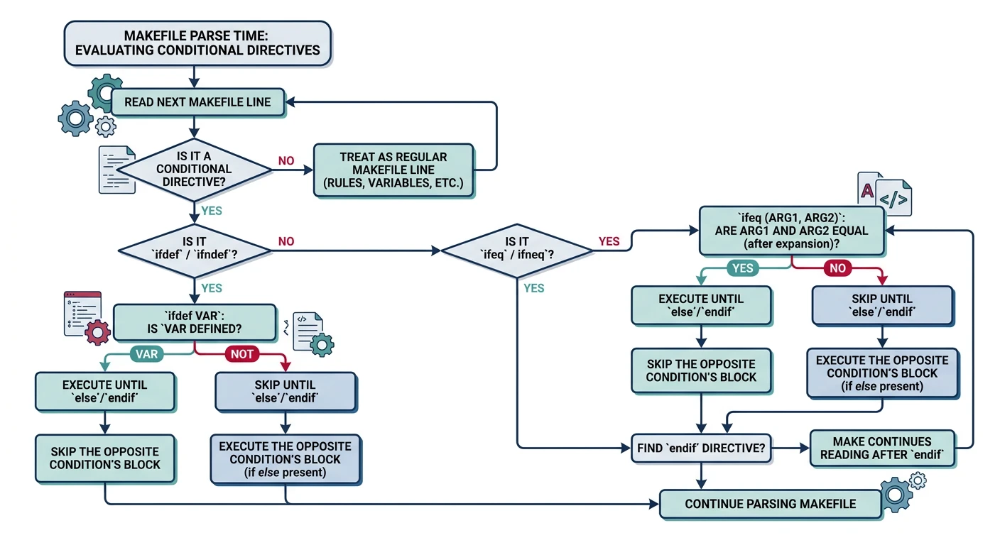
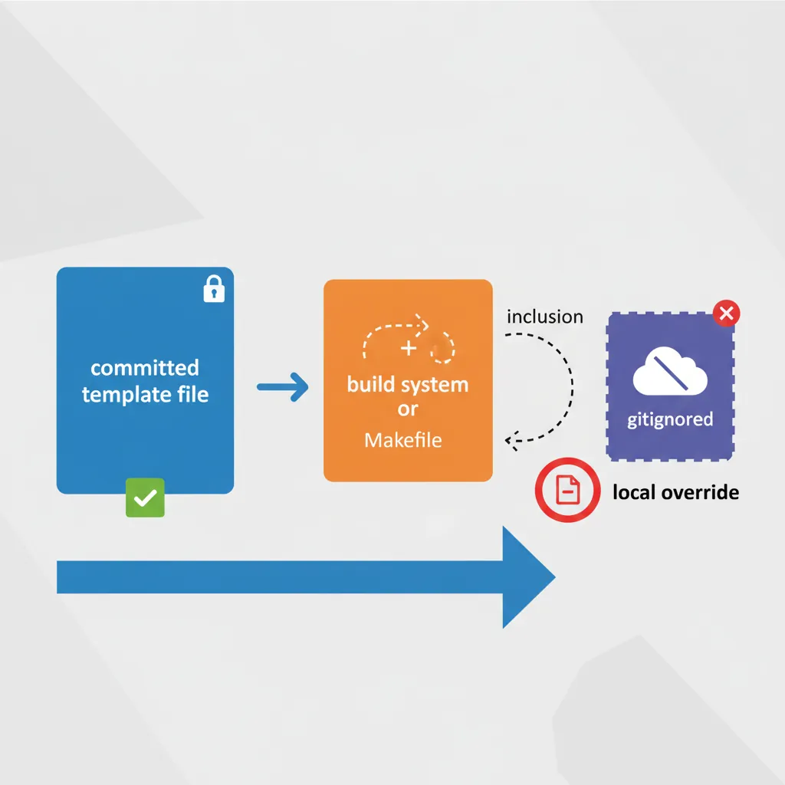

We use cookies to enhance your browsing experience, serve personalized content, and analyze our traffic. By clicking "Accept All", you consent to our use of cookies. See our Privacy Policy for more information.
GNU Make Mastery Part 6: Conditionals & Configurable Builds
February 22, 2026Wasil Zafar21 min read
Write a single Makefile that adapts to any environment: use ifeq, ifdef, OS detection, and feature flags to target debug vs release, Linux vs macOS vs Windows, and native vs cross-compilation — all without editing the file.
Part 6 of 16 — GNU Make Mastery Series. We've mastered variables, pattern rules, and Make's function library. In this part we add decision-making — the ability to build different things in different ways from a single Makefile.
Conditional directives are processed at parse time — before any rules are executed. They control which variable assignments and rules are even seen by Make, making them fundamentally different from shell if statements in recipes.

Conditional directives (ifeq, ifdef) are evaluated at parse time, before any rules execute
Reference
Conditional Directive Summary
Directive
True when…
ifeq (a,b)
a equals b (after expansion)
ifneq (a,b)
a does not equal b
ifdef VAR
VAR is defined and non-empty
ifndef VAR
VAR is undefined or empty
ifeq / ifneq
BUILD ?= debug # default if not set on CLI
ifeq ($(BUILD),debug) # string comparison at parse time
CFLAGS += -O0 -g3 -DDEBUG # no optimisation + full debug info
OUTDIR := build/debug
else ifeq ($(BUILD),release)
CFLAGS += -O3 -DNDEBUG # max optimisation + disable assert()
OUTDIR := build/release
else
$(error Unknown BUILD type: $(BUILD). Use debug or release.) # stop Make with error
endif
ifdef / ifndef
# Enable verbose output only if V is set (e.g. make V=1)
ifdef V
Q :=
else
Q := @ # prefix @ suppresses echo
endif
# Use $(Q) before every recipe command
%.o: %.c
$(Q)$(CC) $(CFLAGS) -c $< -o $@
$(Q)echo " CC $@"
Common Pitfalls
Pitfall 1 — Trailing whitespace:ifeq ($(BUILD), debug) — note the space after the comma. The right-hand side becomes " debug" (with leading space), which will never match the string "debug". Always omit spaces around values: ifeq ($(BUILD),debug).
Pitfall 2 — Conditionals inside recipes: Conditional directives (ifeq) cannot go inside recipe lines. For runtime logic in recipes, use the shell's if statement instead.
Feature flags (WITH_SSL, WITH_JSON) conditionally add sources, compiler flags, and link libraries
The config.mk Pattern
For complex projects, separate build settings into an optional config.mk file that developers create from a template. The main Makefile includes it if present.

The config.mk pattern: a committed template plus a gitignored local override included with -include
# In Makefile — include local config if it exists
-include config.mk # the - prefix means "don't error if missing"
# Then apply defaults for anything not set in config.mk
CC ?= gcc
BUILD ?= debug
PREFIX ?= /usr/local
# config.mk.example — committed to the repo
# Copy to config.mk and customise:
# CC = clang
# BUILD = release
# PREFIX = /opt/myapp
# WITH_SSL = 1
Best Practice: Add config.mk to .gitignore so each developer's local overrides stay out of version control. Commit only config.mk.example.
Hands-On Milestone
Milestone: A single Makefile that builds on Linux and macOS, supports debug/release switching via BUILD=, optional SSL via WITH_SSL=1, and reads local overrides from config.mk.
# --- Try it: test different build configurations ---
make info # show default (debug) configuration
make # debug build with sanitizers
./build/debug/myapp # run debug binary
make BUILD=release info # show release configuration
make BUILD=release # optimised release build
./build/release/myapp # run release binary
make clean # remove all build artifacts
Continue the Series
Part 7: Automatic Dependency Generation
Use GCC's -MM, -MD, and -MP flags to auto-generate .d dependency files and eliminate stale builds caused by header changes.